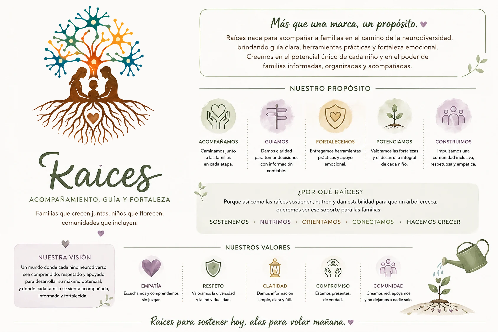

Todo empezó con una necesidad real
Raíces nace de la experiencia de Patricia acompañando el proceso educativo, terapéutico y familiar de su hijo. En ese recorrido encontró información fragmentada, palabras difíciles de traducir a la vida cotidiana y la sensación frecuente de tener que coordinar sola a familia, escuela y profesionales.
La experiencia personal no ofrecía respuestas universales. Sí dejó una práctica valiosa: preguntar, estudiar, ordenar documentos, observar lo cotidiano y preparar conversaciones más claras.
De aprender para una familia a crear para otras
Con el tiempo, esa forma de organizar la información permitió acompañar informalmente a otras madres y familias. No desde un lugar clínico ni como sustitución de especialistas, sino ayudando a comprender lo que estaba pasando y a reconocer cuál podía ser el siguiente paso.
Comprender antes de actuar. Escuchar antes de intervenir.

El paso hacia un proyecto responsable
Raíces es el paso de aquella práctica informal a un proyecto social en construcción. Busca transformar años de escucha, estudio y aprendizaje familiar en herramientas propias, claras y adaptadas a las realidades de familias peruanas.
Por eso mantiene un límite central: la experiencia ayuda a formular preguntas y diseñar herramientas, pero no se presenta como evidencia científica ni reemplaza atención clínica, educativa o institucional.
La persona antes que el diagnóstico; la familia sin culpa; y la convicción de que los apoyos deben construirse alrededor de una vida concreta.